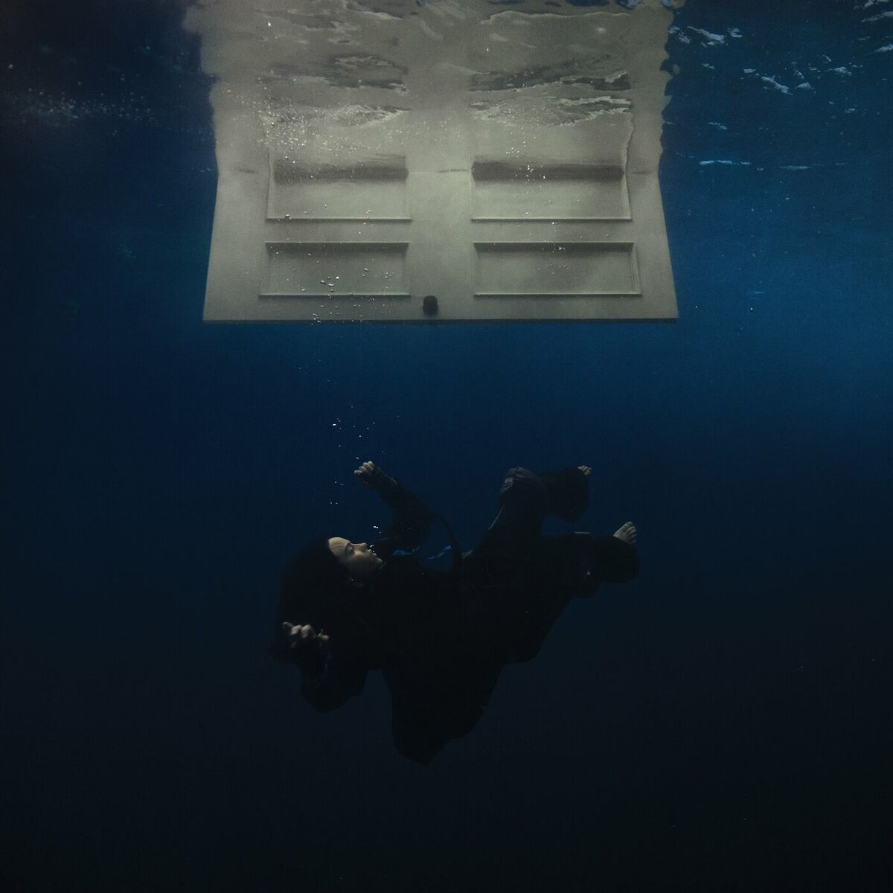

APT
BY ROSE & BRUNO MARS

Humingang malalim, pumikit na muna
At baka sakaling namamalikmata lang
Ba't nababahala? 'Di ba't ako'y mag-isa?
'Kala ko'y payapa, boses mo'y tumatawag pa
Binaon naman na ang lahat
Tinakpan naman na 'king sugat
Ngunit ba't ba andito pa rin?
Hirap na 'kong intindihin
Tanging panalangin, lubayan na sana
Dahil sa bawat tingin, mukha mo'y nakikita
Kahit sa'n man mapunta ay anino mo'y kumakapit sa 'king kamay
Ako ay dahan-dahang nililibing nang buhay pa
Hindi na makalaya
Dinadalaw mo 'ko bawat gabi
Wala mang nakikita
Haplos mo'y ramdam pa rin sa dilim
Hindi na na-nanaginip
Hindi na ma-makagising
Pasindi na ng ilaw
Minumulto na 'ko ng damdamin ko
Ng damdamin ko
'Di mo ba ako lilisanin?
Hindi pa ba sapat pagpapahirap sa 'kin? (Damdamin ko)
Hindi na ba ma-mamamayapa?
Hindi na ba ma-mamamayapa?
Hindi na makalaya
Dinadalaw mo 'ko bawat gabi
Wala mang nakikita
Haplos mo'y ramdam pa rin sa dilim
Hindi na na-nanaginip
Hindi na ma-makagising
Pasindi na ng ilaw
Minumulto na 'ko ng damdamin ko
Ng damdamin ko
Makalaya (hindi mo ba ako lilisanin?)
Dinadalaw mo 'ko bawat gabi (hindi pa ba sapat pagpapahirap sa
'kin?)
Wala mang nakikita (hindi na ba ma-mamamayapa?)
Haplos mo'y ramdam pa rin sa dilim (hindi na ba ma-mamamayapa?)